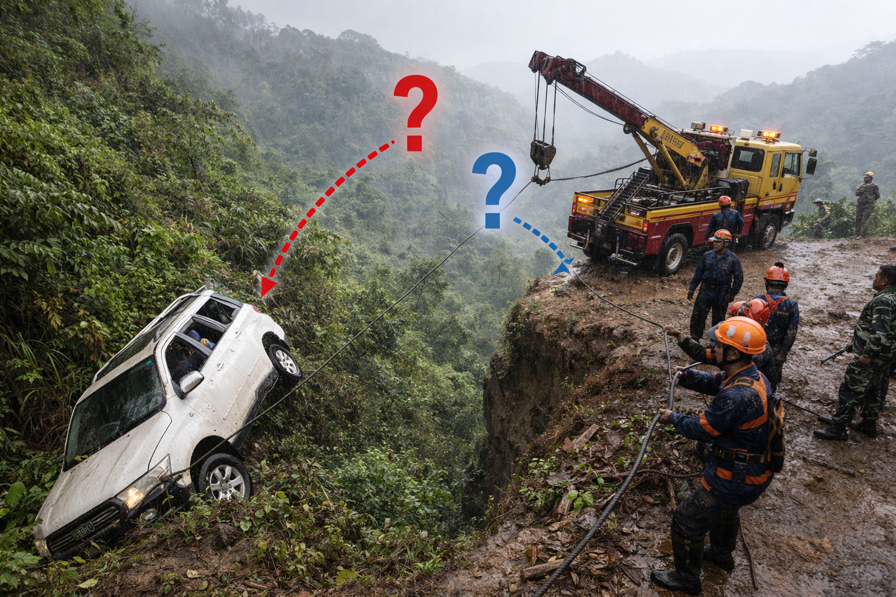

Evakuasi Mobil Terjun ke Jurang
Analisis ilmiah strategi penyelamatan berbasis Hukum Newton

Sebuah mobil yang membawa satu keluarga terjun ke jurang di wilayah Kabupaten Langkat saat perjalanan pulang dari liburan di daerah pegunungan Karo. Mobil tersebut berhenti di lereng jurang dengan posisi miring dan sebagian bodi tertahan oleh semak dan tanah.
Tim penyelamat yang datang ke lokasi berencana melakukan evakuasi dengan menarik mobil menggunakan tali baja yang dihubungkan ke kendaraan derek. Namun, medan di sekitar jurang cukup curam dan licin akibat hujan, sehingga mobil sulit ditarik ke atas.
Sebagian anggota tim berpendapat bahwa mobil dapat langsung ditarik dengan gaya sebesar mungkin agar cepat terangkat. Sementara anggota lain menyarankan agar penarikan dilakukan secara bertahap karena jika gaya tarik terlalu besar, tali bisa putus atau mobil justru tergelincir lebih dalam.
❓ Perbedaan pendapat ini menimbulkan persoalan: Berapa besar gaya tarik yang aman dan efektif agar mobil dapat dievakuasi tanpa menimbulkan risiko tambahan?
Untuk menjawab masalah ini, tim harus menganalisis hubungan antara gaya tarik, massa mobil, dan percepatan gerak selama proses evakuasi, serta menjelaskan secara ilmiah mengapa strategi penarikan tertentu lebih aman berdasarkan Hukum II Newton.